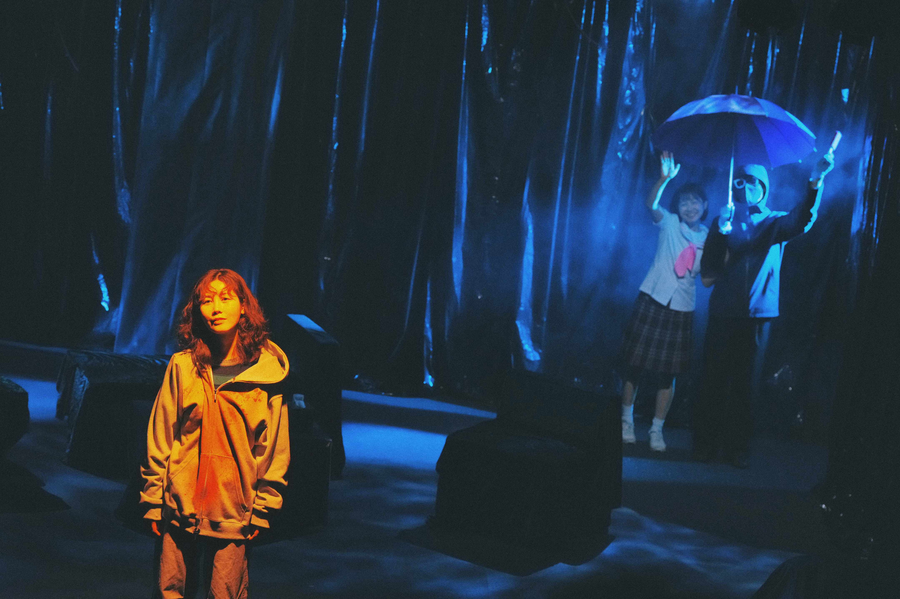

공연을 만들 때마다
시작점에 대해 생각하게 된다.
첫 대사인지.
암전인지.
관객이 객석에 앉는 순간인지.
001
달수랑
정직이랑
바다아이
정직이랑
바다아이
2026.06
선돌극장
무대 위에 남은 것보다
무대 밖에서 지나간 시간들이 조금 더 궁금해졌다.
선돌극장
무대 위에 남은 것보다
무대 밖에서 지나간 시간들이 조금 더 궁금해졌다.
공연이 시작되기 전의 시간

명확하게 선을 긋기는 어렵다.
다만 이번 작업에서도 결국 비슷한 곳에서 멈췄다.
무대 위에 올리는 것과 관객이 실제로 경험하는 것은
어디까지 같은 것인가.
다만 이번 작업에서도 결국 비슷한 곳에서 멈췄다.
무대 위에 올리는 것과 관객이 실제로 경험하는 것은
어디까지 같은 것인가.

“하우스 음악이라도 만들어 볼까요?”
시작은 특별한 계획보다
12,000원의 유료 결제가 아까워 던진 작은 제안에 가까웠다.
12,000원의 유료 결제가 아까워 던진 작은 제안에 가까웠다.
“안내멘트를 노래로 하면 재밌겠다.”
연출의 한마디가 더해지며
음악은 분위기를 채우는 것에서
역할을 가지기 시작했다.
음악은 분위기를 채우는 것에서
역할을 가지기 시작했다.
전달해야 할 내용은 그대로였다.
휴대폰.
촬영 안내.
비상시 대피.
달라진 것은 정보가 아니라
그 정보를 만나는 시간이었다.
휴대폰.
촬영 안내.
비상시 대피.
달라진 것은 정보가 아니라
그 정보를 만나는 시간이었다.
설명과 경험 사이
프로그램북은 공연을 설명하기 위해 존재한다.
하지만 공연을 설명하는 일이
반드시 공연 밖에 있어야 하는지는 모르겠다.
하지만 공연을 설명하는 일이
반드시 공연 밖에 있어야 하는지는 모르겠다.

시작은 예술감독이 가져온 하나의 이미지였다.
그것이 연출을 거쳐 나에게 왔고,
나는 가능한 형태를 찾아갔다.
그것이 연출을 거쳐 나에게 왔고,
나는 가능한 형태를 찾아갔다.
당신은 인간입니까.
안드로이드입니까.
피를 판매하러 왔습니까.
구매하러 왔습니까.
안드로이드입니까.
피를 판매하러 왔습니까.
구매하러 왔습니까.
정보를 보기 전,
먼저 위치를 묻기로 했다.
먼저 위치를 묻기로 했다.
무대 밖의 시간
홍보는 보통
만들어진 공연을 보여준다.
이번에는 조금 다른 방향을 생각했다.
만들어진 공연을 보여준다.
이번에는 조금 다른 방향을 생각했다.

이미 있는 장면을 소개하기보다
있었을지도 모르는 시간을 만들고 싶었다.
무대에서 보여지지 않는 시간.
등장하지 않는 기록.
하지만 인물에게는 존재했을 하루.
있었을지도 모르는 시간을 만들고 싶었다.
무대에서 보여지지 않는 시간.
등장하지 않는 기록.
하지만 인물에게는 존재했을 하루.
공연은 결국 사라진다.
그래서 기록하려 한다.
완성된 결과보다
그곳으로 향하던 생각들을.
보이는 것과
남겨진 것 사이.
완성된 결과보다
그곳으로 향하던 생각들을.
보이는 것과
남겨진 것 사이.